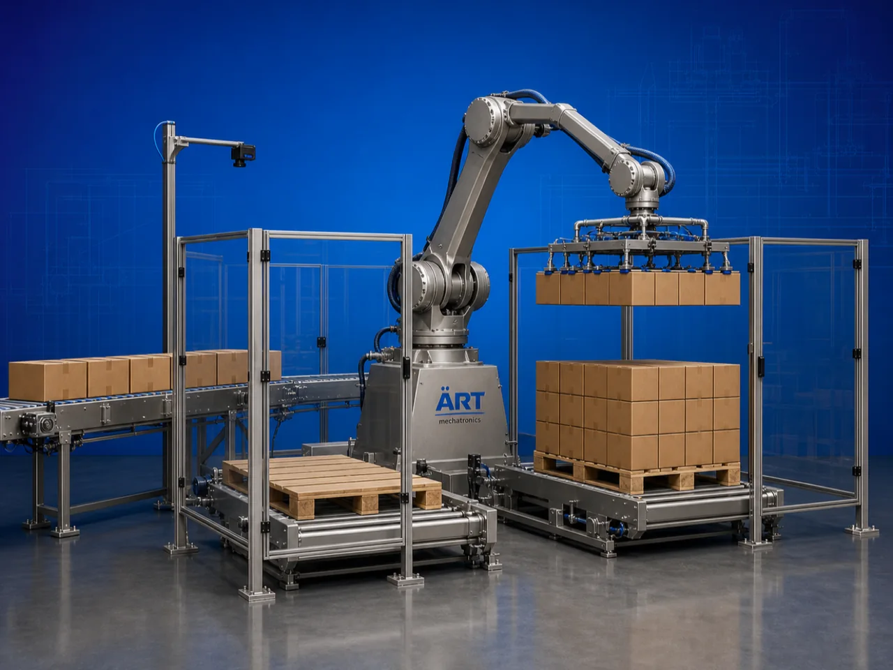

Palletizer & Depalletizer Robot Machine (Industrial Robotic Pallet Handling & Automation System)
A Palletizer & Depalletizer Robot Machine, also known as a Robotic Palletizing System or Industrial Pallet Handling Robot, is an advanced automation solution designed for automatic stacking, arranging, loading, unloading, and transferring cartons, bags, boxes, bottles, containers, sacks, and packaged products onto or from pallets using intelligent robotic arm technology.

About the Palletizer & De Palletizer Robot
Palletizer and depalletizer robotic systems are widely used for:
- Automatic pallet stacking
- Robotic pallet unloading
- End-of-line packaging automation
- Warehouse material handling
- Production line automation
- Smart factory logistics systems
The machine improves:
- Production speed
- Packaging efficiency
- Labor reduction
- Product handling accuracy
- Workplace safety
- Logistics productivity
The robotic system combines:
- Multi-axis robotic arms
- Conveyor integration systems
- PLC and HMI automation
- Servo-controlled motion systems
- Smart gripping technology
to perform continuous high-speed pallet handling operations automatically.
Palletizer and depalletizer robot machines are widely used in industries such as:
Food processing industries
Beverage industries
Packaging industries
Pharmaceutical industries
Cement industries
Fertilizer industries
Warehousing & logistics
Manufacturing industries
where automatic pallet handling and high-speed dispatch automation are essential.
The machine is highly suitable for:
- Carton palletizing
- Sack palletizing
- Bottle palletizing
- Automatic depalletizing
- Warehouse automation
- Packaging line integration
ART Mechatronics offers high-performance palletizer & depalletizer robot machines, engineered for Industry 4.0 automation, intelligent pallet handling, heavy-duty industrial operation, and reliable long-term performance.
Working Principle of Palletizer & Depalletizer Robot Machine
Cartons, bags, bottles, boxes, or containers move continuously on conveyor system
Sensors and automation systems identify:
- Product position
- Size
- Orientation
- Pallet stacking pattern
Robotic arm picks products using: Vacuum grippers Mechanical grippers Clamp systems Magnetic grippers
Robot places products accurately onto pallet or removes them during depalletizing.
PLC automation controls: Layer arrangement Product alignment Stack height Pallet stability
Robotic system integrates with: Conveyor systems Stretch wrapping machines Packaging lines Warehouse automation systems
Completed pallets transferred automatically to: Warehouse storage Dispatch area AGV systems Forklift zones
Types of Palletizer & Depalletizer Robot Machines
- 1. Robotic Palletizer
Designed for: ✔ Automatic pallet stacking operations
- 2. Robotic Depalletizer
Suitable for: ✔ Automatic unloading and product separation systems
- 3. Bag Palletizer Robot
Used for: ✔ Cement, fertilizer, flour, and grain bag palletizing systems
- 4. Carton Palletizer Robot
Designed for: ✔ Carton and box pallet stacking operations
- 5. Bottle Palletizer System
Suitable for: ✔ Beverage and bottling industries
- 6. High-Speed Industrial Palletizer
Designed for: ✔ Large-scale automated packaging and dispatch operations
Industries Using Palletizer & Depalletizer Robot Machines
📦 Packaging Industry End-of-line packaging automation systems 🍃 Food Processing Industry Food carton and bag palletizing systems 🥤 Beverage Industry Bottle palletizing and depalletizing systems 💊 Pharmaceutical Industry Medicine carton pallet handling systems 🏗️ Cement Industry Cement bag palletizing systems 🌱 Fertilizer Industry Fertilizer sack stacking systems 🚚 Warehousing & Logistics Warehouse pallet automation systems 🏭 Manufacturing Industry Automatic dispatch and storage systems
Features & Advantages
- Fully automatic pallet stacking and unloading
- High-speed robotic product handling
- Reduces labor and manual pallet handling
- Improves packaging and dispatch efficiency
- Accurate and stable pallet formation
- Continuous industrial operation
- Heavy-duty industrial construction
- Smart automation and conveyor integration
- Energy-efficient robotic automation system
Technical Highlights
Robot Type: Multi-axis robotic arm Palletizing robot Depalletizing robot Gripping System: Vacuum gripper Mechanical gripper Clamp system Control System: PLC automation Servo motion control HMI touchscreen interface Conveyor Integration: Roller conveyors Belt conveyors Pallet conveyors Automation: Fully automatic robotic operation
Turnkey Palletizing Automation Solutions
ART Mechatronics offers: Complete palletizer and depalletizer systems End-of-line packaging automation solutions Conveyor and robotic integration systems Smart warehouse automation integration Installation & commissioning After-sales service & AMC
Why Choose Art Mechatronics
Expertise in industrial robotics and packaging automation systems Customized palletizing solutions for multiple industries High-performance intelligent automation systems Advanced PLC, conveyor, and robotic integration capability Proven Industry 4.0 automation performance across sectors
Applications
Packaging Facilities Food Processing Plants Beverage Industries Cement Plants Fertilizer Industries Warehousing & Logistics Centers
Related Automation & Robotics machines
Get pricing & specs for the Palletizer & De Palletizer Robot
Share the product, target capacity, current process and plant location. These details help our engineers discuss the right machine or line configuration.
One partner, from design to start-up
ART Mechatronics designs, manufactures, installs and commissions your Palletizer & De Palletizer Robot solution with regional presence in India, UAE and Thailand.